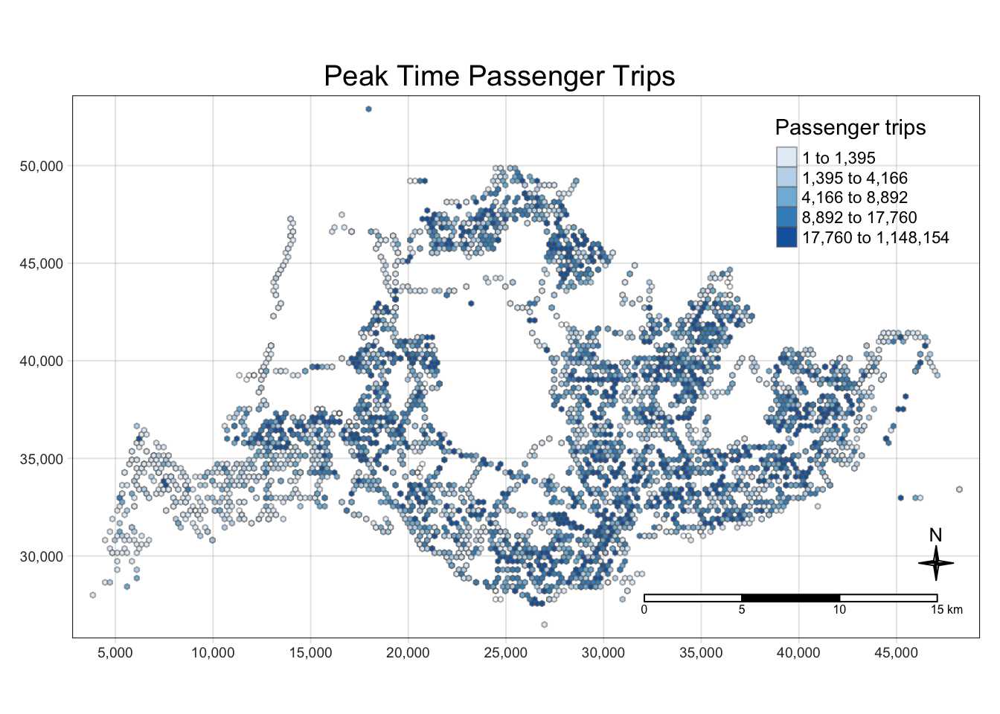
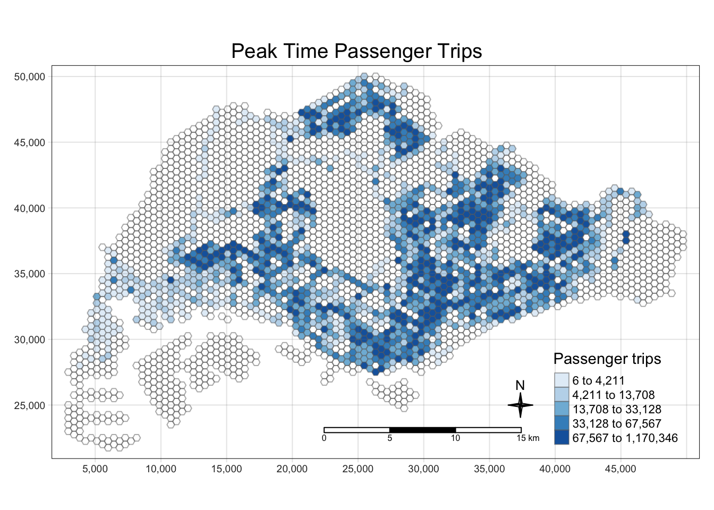

Code
pacman::p_load(sf, spdep, tmap, tidyverse, sfdep, Kendall)As city-wide urban infrastructures such as buses, taxis, mass rapid transit, public utilities and roads become digital, the datasets obtained can be used as a framework for tracking movement patterns through space and time. This is particularly true with the recent trend of massive deployment of pervasive computing technologies such as GPS and RFID on the vehicles. For example, routes and ridership data were collected with the use of smart cards and Global Positioning System (GPS) devices available on the public buses. These massive movement data collected are likely to contain structure and patterns that provide useful information about characteristics of the measured phenomena. The identification, analysis and comparison of such patterns will provide greater insights on human movement and behaviours within a city. These understandings will potentially contribute to a better urban management and useful information for urban transport services providers both from the private and public sector to formulate informed decision to gain competitive advantage.
In real-world practices, the use of these massive locational aware data, however, tend to be confined to simple tracking and mapping with GIS applications. This is mainly due to a general lack of functions in conventional GIS which is capable of analysing and model spatial and spatio-temporal data effectively.
Exploratory Spatial Data Analysis (ESDA) hold tremendous potential to address complex problems facing society. In this study, you are tasked to apply appropriate Local Indicators of Spatial Association (GLISA) and Emerging Hot Spot Analysis (EHSA) to undercover the spatial and spatio-temporal mobility patterns of public bus passengers in Singapore.
First of all, load needing packages.
pacman::p_load(sf, spdep, tmap, tidyverse, sfdep, Kendall)For the purpose of this take-home exercise, Passenger Volume by Origin Destination Bus Stops downloaded from LTA DataMall will be used.
Import the passenger volume by origin destination bus stops data.
odbus = read_csv("./data/aspatial/origin_destination_bus_202308.csv") %>%
mutate(ORIGIN_PT_CODE = as.factor(ORIGIN_PT_CODE),
DESTINATION_PT_CODE = as.factor(DESTINATION_PT_CODE))Two geospatial data will be used in this study, they are:
busstop = st_read(dsn = "./data/geospatial/BusStopLocation_Jul2023",
layer = "BusStop") %>% st_transform(crs = 3414) %>%
distinct(BUS_STOP_N, .keep_all = TRUE)Reading layer `BusStop' from data source
`/Users/SMU/liangyao2023/ISSS624/Takehome_Ex/Takehome_Ex01/data/geospatial/BusStopLocation_Jul2023'
using driver `ESRI Shapefile'
Simple feature collection with 5161 features and 3 fields
Geometry type: POINT
Dimension: XY
Bounding box: xmin: 3970.122 ymin: 26482.1 xmax: 48284.56 ymax: 52983.82
Projected CRS: SVY21Here I found that there are several rows in ‘busstop’ data have duplicate BUS_STOP_N but slightly different geometry, so I used distinct to keep only one of those for doing intersection with hexagon.
# generate grid with size of 250.
hexagon <- st_sf(geometry = st_make_grid(busstop, cellsize = c(250,250), what = "polygons",square = FALSE))
# filter out grids with no intersect with bus stop.
hexagon <- hexagon %>%
mutate(n=lengths(st_intersects(hexagon, busstop))) %>%
filter(n>0) %>%
mutate(id = row_number())
# join intersection with hexagon to get bus stop N
hexagon <- st_join(hexagon,st_intersection(hexagon%>% select(geometry), busstop%>% select(BUS_STOP_N,geometry))) %>%
distinct(BUS_STOP_N, .keep_all = TRUE)The specific tasks of this take-home exercise are as follows:
With reference to the time intervals provided in the table below, compute the passenger trips generated by origin at the hexagon level,
| Peak hour period | Bus tap on time |
|---|---|
| Weekday morning peak | 6am to 9am |
| Weekday afternoon peak | 5pm to 8pm |
| Weekend/holiday morning peak | 11am to 2pm |
| Weekend/holiday evening peak | 4pm to 7pm |
Display the geographical distribution of the passenger trips by using appropriate geovisualisation methods,
Describe the spatial patterns revealed by the geovisualisation (not more than 200 words per visual).
Extract peak data, and combine 4 time intervals data for further use.
peak_trips <- bind_rows(
odbus %>%
filter(DAY_TYPE == "WEEKDAY") %>%
filter(TIME_PER_HOUR >= 6 &
TIME_PER_HOUR <= 9) %>%
group_by(ORIGIN_PT_CODE) %>%
summarise(TRIPS = sum(TOTAL_TRIPS)) %>%
mutate(interval = "weekday_6_9"),
odbus %>%
filter(DAY_TYPE == "WEEKDAY") %>%
filter(TIME_PER_HOUR >= 17 &
TIME_PER_HOUR <= 20) %>%
group_by(ORIGIN_PT_CODE) %>%
summarise(TRIPS = sum(TOTAL_TRIPS)) %>%
mutate(interval = "weekday_17_20"),
odbus %>%
filter(DAY_TYPE == "WEEKENDS/HOLIDAY") %>%
filter(TIME_PER_HOUR >= 11 &
TIME_PER_HOUR <= 14) %>%
group_by(ORIGIN_PT_CODE) %>%
summarise(TRIPS = sum(TOTAL_TRIPS)) %>%
mutate(interval = "weekend_11_14"),
odbus %>%
filter(DAY_TYPE == "WEEKENDS/HOLIDAY") %>%
filter(TIME_PER_HOUR >= 16 &
TIME_PER_HOUR <= 19) %>%
group_by(ORIGIN_PT_CODE) %>%
summarise(TRIPS = sum(TOTAL_TRIPS)) %>%
mutate(interval = "weekend_16_19"))
glimpse(peak_trips)Rows: 20,044
Columns: 3
$ ORIGIN_PT_CODE <fct> 01012, 01013, 01019, 01029, 01039, 01059, 01109, 01112,…
$ TRIPS <dbl> 1973, 952, 1789, 2561, 2938, 1651, 161, 8492, 9015, 424…
$ interval <chr> "weekday_6_9", "weekday_6_9", "weekday_6_9", "weekday_6…First combine passenger trip data with geospatial data.
origin_trips <- left_join(peak_trips, busstop,
by = c("ORIGIN_PT_CODE" = "BUS_STOP_N")) %>%
rename(BUS_STOP_N = ORIGIN_PT_CODE) %>%
group_by(BUS_STOP_N) %>%
summarise(TRIPS = sum(TRIPS))Duplication check before continue:
origin_trips %>%
group_by_all() %>%
filter(n()>1) %>%
ungroup()# A tibble: 0 × 2
# ℹ 2 variables: BUS_STOP_N <chr>, TRIPS <dbl>4.1.3.1 Firstly, let’s check out the distribution of peak time trips of 4 time intervals in total.
Below code chunk aims at wrangling the peak time trips data for visualization.
peaktrip_hex <- left_join(hexagon, origin_trips, by = join_by(BUS_STOP_N)) Now we can visualize the distribution of total bus trips.
tmap_mode("plot")
tm_shape(peaktrip_hex) +
tm_fill("TRIPS",
style = "quantile",
palette = "Blues",
title = "Passenger trips",
colorNA = NULL,
showNA = FALSE) +
tm_layout(main.title = "Peak Time Passenger Trips",
main.title.position = "center",
main.title.size = 1.2,
legend.height = 0.45,
legend.width = 0.35,
frame = TRUE) +
tm_compass(type="4star", size = 1.5) +
tm_borders(alpha = 0.5) +
tm_scale_bar() +
tm_grid(alpha =0.2)
Observation:
.
4.1.3.2 Then, to display the geographical distribution of 4 time intervals separately for comparison:
Regenerate trip data with the “interval” column to indicate different time intervals.
peak_trips_interval <- left_join(peak_trips, busstop,
by = c("ORIGIN_PT_CODE" = "BUS_STOP_N")) %>%
rename(BUS_STOP_N = ORIGIN_PT_CODE) %>%
group_by(BUS_STOP_N, interval) %>%
summarise(TRIPS = sum(TRIPS)) %>%
mutate(daily_trips =
ifelse(grepl("weekday",interval), ceiling(TRIPS/22), ceiling(TRIPS/9)))
glimpse(peak_trips_interval)Rows: 20,044
Columns: 4
Groups: BUS_STOP_N [5,067]
$ BUS_STOP_N <chr> "01012", "01012", "01012", "01012", "01013", "01013", "010…
$ interval <chr> "weekday_17_20", "weekday_6_9", "weekend_11_14", "weekend_…
$ TRIPS <dbl> 8448, 1973, 2273, 3208, 7328, 952, 1697, 2796, 3608, 1789,…
$ daily_trips <dbl> 384, 90, 253, 357, 334, 44, 189, 311, 164, 82, 168, 181, 4…Here I create a column “daily_trips” to find number of trips per day, since it’s hard to compare the absolute number when we are differentiating weekday and weekend peak times intervals. For Aug 2023, there are 31 days in which 8 days are weekends and 1 day is National holiday.
peak_dailytrips_interval <- peak_trips_interval %>%
select(BUS_STOP_N,interval,daily_trips) %>%
pivot_wider(names_from = interval,
values_from = daily_trips,
values_fill = NA)Join back with hexagon.
interval_dailytrip_hex <- left_join(hexagon, peak_dailytrips_interval,
by = join_by(BUS_STOP_N)) Then we can draw graph for each time intervals.
Visualize daily trip distribution for each time intervals.
tmap_mode("plot")
tm_shape(interval_dailytrip_hex)+
tm_polygons(c("weekday_6_9","weekday_17_20","weekend_11_14","weekend_16_19"),
style = "quantile",
palette = "Reds",
title = "",
colorNA = NULL,
showNA = FALSE) +
tm_layout(panel.show = TRUE,
panel.labels = c("Weekday 6-9am", "Weekday 5-8pm", "Weekend 11am-2pm", "Weekend 4-7pm"))
Observation:
From the color scale we can find that the number of bus trips at night peak time intervals is larger than morning peak time intervals.
Heavy trip hexagons are more disperse throughout the island during morning peak time intervals, and more concentrate in similar locations during night peak time intervals.
With reference to the passenger trips by origin at the hexagon level for the four time intervals given above:
Perform Mann-Kendall Test by using the spatio-temporal local Gi* values,
Prepared EHSA maps of the Gi* values of the passenger trips by origin at the hexagon level. The maps should only display the significant (i.e. p-value < 0.05).
With reference to the EHSA maps and data visualisation prepared, describe the spatial patterns reveled. (not more than 250 words per cluster).
First we need a full bus_stop intersection with hexagon including the geometry.
bus_hex_f <- st_intersection(hexagon,
busstop %>% distinct(BUS_STOP_N, .keep_all = TRUE))And we need to extract the passenger trips data during 4 peak time intervals from odbus.
peak_trips_hour <- bind_rows(
odbus %>%
filter(DAY_TYPE == "WEEKDAY") %>%
filter(TIME_PER_HOUR >= 6 &
TIME_PER_HOUR <= 9) %>%
group_by(ORIGIN_PT_CODE,TIME_PER_HOUR) %>%
summarise(TRIPS = sum(TOTAL_TRIPS)) %>%
rename('BUS_STOP_N'='ORIGIN_PT_CODE'),
odbus %>%
filter(DAY_TYPE == "WEEKDAY") %>%
filter(TIME_PER_HOUR >= 17 &
TIME_PER_HOUR <= 20) %>%
group_by(ORIGIN_PT_CODE,TIME_PER_HOUR) %>%
summarise(TRIPS = sum(TOTAL_TRIPS)) %>%
rename('BUS_STOP_N'='ORIGIN_PT_CODE'),
odbus %>%
filter(DAY_TYPE == "WEEKENDS/HOLIDAY") %>%
filter(TIME_PER_HOUR >= 11 &
TIME_PER_HOUR <= 14) %>%
group_by(ORIGIN_PT_CODE,TIME_PER_HOUR) %>%
summarise(TRIPS = sum(TOTAL_TRIPS)) %>%
rename('BUS_STOP_N'='ORIGIN_PT_CODE'),
odbus %>%
filter(DAY_TYPE == "WEEKENDS/HOLIDAY") %>%
filter(TIME_PER_HOUR >= 16 &
TIME_PER_HOUR <= 19) %>%
group_by(ORIGIN_PT_CODE,TIME_PER_HOUR) %>%
summarise(TRIPS = sum(TOTAL_TRIPS)) %>%
rename('BUS_STOP_N'='ORIGIN_PT_CODE')) %>%
left_join(hexagon, by = "BUS_STOP_N") %>%
group_by(BUS_STOP_N,TIME_PER_HOUR) %>%
summarise(TRIPS = sum(TRIPS)) %>%
mutate(TIME_PER_HOUR = as(TIME_PER_HOUR, "integer")) %>%
ungroup()
glimpse(peak_trips_hour)Rows: 64,256
Columns: 3
$ BUS_STOP_N <chr> "01012", "01012", "01012", "01012", "01012", "01012", "0…
$ TIME_PER_HOUR <int> 6, 7, 8, 9, 11, 12, 13, 14, 16, 17, 18, 19, 20, 6, 7, 8,…
$ TRIPS <dbl> 356, 360, 709, 548, 383, 554, 609, 727, 760, 3222, 3352,…And then create an space-time cube for the per hour trip data.
#peak_trips_st <- spacetime(peak_trips_hour,
# hexagon,
# .loc_col = "BUS_STOP_N",
# .time_col = "TIME_PER_HOUR") %>%
# complete_spacetime_cube() %>%
# mutate(TRIPS = replace_na(TRIPS,0))Here since the Number of rows does not equal `n time-periods x n locations, I used complete_spacetime_cube() to fill up the cube. Rows with no trips would be NA, so I used replace_na to convert NA into 0 for further use.
Before continue, we better make sure the peak_st is indeed an space-time cube object.
# Row number should be 5093*13 = 66209 after complete
# is_spacetime_cube(peak_trips_st)Then we need to identify neighbors and to derive an inverse distance weights.
#peak_trips_nb <- peak_trips_st %>%
# activate("geometry") %>%
# mutate(geometry = st_cast(geometry, "POLYGON")) %>%
# mutate(nb = include_self(st_contiguity(geometry)),
# wt = st_inverse_distance(nb, geometry,
# scale = 1,
# alpha = 1),
# .before = 1) %>%
# set_nbs("nb") %>%
# set_wts("wt")
#print(head(peak_trips_nb, 5))Next we can compute Gi* values for each location base on the space-time cube.
#peak_trips_gi <- peak_trips_nb %>%
# mutate(TRIPS = replace_na(TRIPS,0)) %>%
# mutate(gi_star = local_gstar_perm(TRIPS, nb, wt)) %>%
# tidyr::unnest(gi_star)
#print(head(peak_trips_gi, 5))We can plot the Gi* measures for clearer observation.
#ggplot(data = peak_trips_gi %>% ungroup(),
# aes(x = TIME_PER_HOUR,
# y = gi_star)) +
# geom_line() +
# labs(title = "Gi* Measures of Peak Time Bus Trips") +
# theme_light()#peak_trips_gi %>%
# group_by(TIME_PER_HOUR) %>%
# summarise(mk = list(
# unclass(
# MannKendall(gi_star)))) %>%
# unnest_wider(mk)#ehsa <- emerging_hotspot_analysis(
# x = peak_trips_st,
# .var = "TRIPS",
# nsim = 9)Take a look at the EHSA.
#glimpse(ehsa)#ggplot(data = ehsa,
# aes(x = classification)) +
# geom_bar()Before plot, join ehsa data back with hexagon.
#hex_ehsa <- busstop_hexagon %>%
# left_join(ehsa,
# by = join_by(BUS_STOP_N == location))Then we can plot a categorical choropleth map.
#ehsa_sig <- hex_ehsa %>%
# filter(p_value < 0.05)
#tmap_mode("plot")
#tm_shape(hex_ehsa) +
# tm_polygons(colorNA = NULL) +
# tm_borders(alpha = 0.5) +
#tm_shape(ehsa_sig) +
# tm_fill("classification",
# title = "EHSA classes") +
# tm_layout(main.title = "EHSA Classes in Choropleth Maps",
# main.title.position = "center",
# main.title.size = 1.2,
# legend.height = 0.45,
# legend.width = 0.35,
# frame = TRUE) +
# tm_grid(alpha =0.2) +
# tm_compass(type="4star", size = 1.5) +
# tm_borders(alpha = 0.5) +
# tm_scale_bar() As the geographic distribution of EHSA classes above shows, the hexagons with most number of bus trips during peak hours are filtered out by the significance level of 5% and for those areas with nearly no bus trips during peak hours with significance level below 5% but no pattern detected.